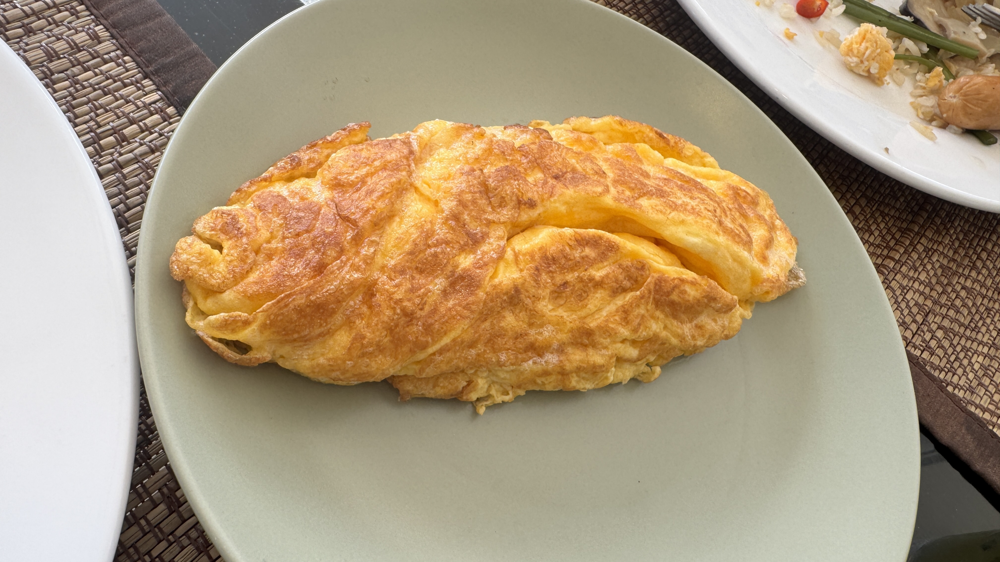

Cheese Omelette

Description
Rustle up a simple omelette for a quick and easy snack any time of day.
Use mature cheddar for maximum cheesy flavour
Ingredients
- 2 eggs
- ½ tbsp olive oil
- 1 tbsp butter
- 15g mature cheddar (finely grated)
Steps
- Crack the eggs into a jug and whisk well with a fork. Season with a pinch of salt.
- Heat the oil and butter in a medium non-stick frying pan over a medium-low heat. Once the butter has started to foam, pour in the eggs and tilt to cover the base of the pan.
- Using a spatula, gently draw in the eggs from four points so there are folds in the centre. Do this once or twice, then leave the eggs to cook gently for 2-3 mins, until there's a little raw egg still in the middle.
- Sprinkle over the cheese and, using your spatula, gently fold the omelette in half.
- Switch off the heat and let the residual heat from the pan melt the cheese for 1 min. Slide onto your plate and sprinkle over some black pepper to serve.
Home